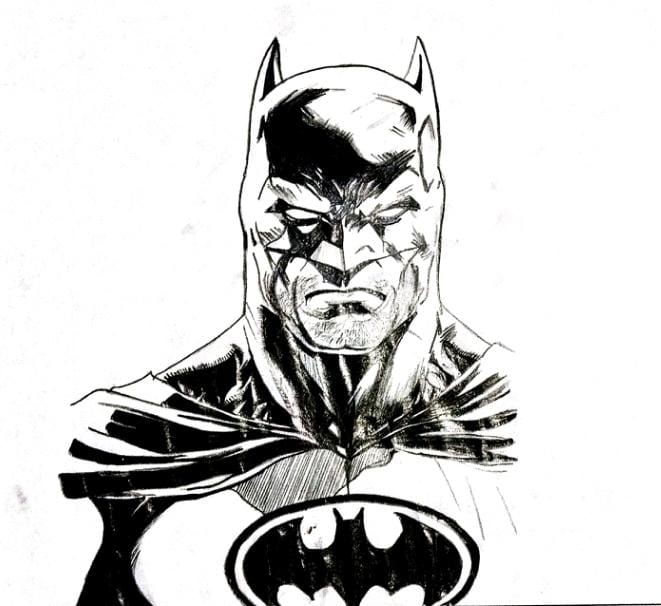

Exploración de Estilos de Dibujo
La exploración de diferentes estilos de dibujo es una parte fundamental del desarrollo artístico, ya que permite a los artistas descubrir nuevas formas de expresión, técnicas y modos de representación. Cada estilo tiene su propio conjunto de características, técnicas y aplicaciones que ofrecen diversas maneras de ver y representar el mundo. Experimentar con diferentes estilos no solo enriquece la habilidad técnica del artista, sino que también abre la puerta a una mayor creatividad y autodescubrimiento.
A través de la exploración, los artistas aprenden a adaptar su enfoque a las demandas específicas de cada estilo, ya sea capturando la luz de una escena impresionista, la precisión anatómica de un retrato realista, o la imaginación libre de una obra surrealista. Esta variedad en el aprendizaje permite desarrollar una comprensión más profunda de cómo los elementos del arte, como la línea, la forma, el color y la textura, pueden manipularse para crear diferentes efectos visuales y emocionales.
Además, la práctica de diferentes estilos estimula la flexibilidad artística, ayudando a los artistas a ser más versátiles en su trabajo. Les permite tomar decisiones más informadas sobre cuál es el mejor estilo para comunicar un mensaje específico o evocar una respuesta emocional particular en el espectador. A medida que los artistas exploran estos estilos, también pueden fusionar técnicas de varios enfoques, desarrollando así un estilo personal único que refleja tanto su habilidad técnica como su visión artística individual.
La exploración de estilos es, por lo tanto, no solo un ejercicio técnico, sino también un viaje de autoexpresión y crecimiento personal que desafía a los artistas a expandir sus límites y a ver el mundo desde múltiples perspectivas.
